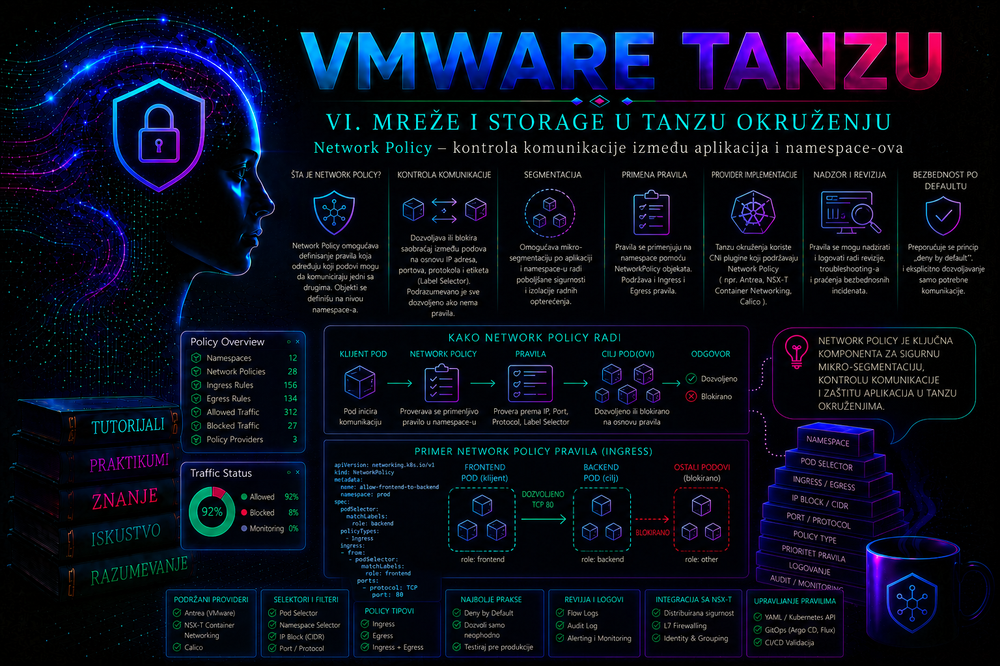

VMware & Tanzu

U Kubernetes klasteru mrežna dostupnost i mrežna dozvola nisu isto. CNI komponenta najpre obezbeđuje da podovi dobiju IP adrese i da mogu da razmenjuju pakete, dok objekat NetworkPolicy određuje koji od tih tokova smeju da prođu. Bez mrežnih politika većina klastera funkcioniše po modelu široke interne povezanosti: kompromitovani pod može pokušati da pristupi drugim aplikacijama, bazama podataka i servisima koje poslovno nikada ne bi trebalo da kontaktira.
Network Policy zato nije dodatak koji se uvodi tek nakon incidenta, već deo dizajna aplikacije. Administrator njome smanjuje lateralno kretanje napadača, razdvaja aplikacione slojeve, ograničava komunikaciju između namespace-ova i dokumentuje dozvoljene mrežne zavisnosti. Istovremeno mora razumeti da pogrešno postavljena politika može prekinuti DNS rezoluciju, pristup bazi, health probe provere, monitoring, pristup spoljnim servisima ili ulazni saobraćaj preko Ingress kontrolera.
Uloga Network Policy objekta
Kubernetes NetworkPolicy je namespaced objekat API grupe networking.k8s.io/v1. On bira podove pomoću labela i opisuje dozvoljeni dolazni, odnosno ingress, i odlazni, odnosno egress, saobraćaj na L3 i L4 nivou. Pravila mogu da se zasnivaju na podovima, namespace-ovima, IP opsezima, protokolima i portovima.
Politika ne kreira konekciju, Service, rutu ili firewall uređaj. Ona samo ograničava saobraćaj koji mrežni dodatak već ume da prosledi. Kubernetes API prihvata NetworkPolicy objekat čak i kada instalirani CNI ne podržava njegovo sprovođenje. U takvom klasteru objekat može izgledati ispravno u izlazu komande kubectl get networkpolicy, a da stvarni saobraćaj ostane potpuno otvoren. Zbog toga prva administratorska provera nije postojanje YAML objekta, već potvrda da CNI implementira NetworkPolicy.
U Tanzu Kubernetes Grid okruženjima Antrea je čest i u mnogim modelima implementacije podrazumevani CNI. Antrea Controller prati podove, namespace-ove i mrežne politike, izračunava pravila, a Antrea Agent na svakom node-u programira lokalni datapath zasnovan na Open vSwitch-u. Od konkretne Tanzu, vSphere i Antrea verzije zavise dostupne napredne mogućnosti, ali standardni Kubernetes NetworkPolicy treba razlikovati od Antrea-specifičnih resursa kao što su Antrea NetworkPolicy i Antrea ClusterNetworkPolicy. Ova lekcija kao prenosivu osnovu koristi standardni Kubernetes API.
Model dozvole i izolacije podova
NetworkPolicy koristi model dozvoljavanja, a ne uređenu listu klasičnih firewall pravila. Standardni objekat nema opštu akciju „deny” niti numerički prioritet. Kada nijedna politika ne izabere pod za određeni smer, pod u tom smeru nije izolovan i saobraćaj je načelno dozvoljen. Čim makar jedna politika izabere pod za ingress ili egress, za taj smer postaju dozvoljeni samo tokovi koje dopušta zbir svih primenljivih politika.
Politike su aditivne. Jedna politika ne poništava dozvolu koju daje druga standardna NetworkPolicy. Ako politika A dozvoljava pristup API podu sa frontend podova, a politika B dozvoljava pristup istom API podu iz monitoring namespace-a, važe obe dozvole. Zbog toga administrator ne sme da analizira samo poslednju primenjenu politiku, već kompletan skup politika koje biraju isti pod.
Za uspešnu vezu između dva izolovana poda moraju biti zadovoljene obe strane: egress pravilo izvornog poda mora dozvoliti tok, a ingress pravilo odredišnog poda takođe mora dozvoliti isti tok. Dozvola samo na jednoj strani nije dovoljna. Odgovorni paketi postojeće dozvoljene konekcije tretiraju se kao deo te konekcije; nije potrebno pisati posebno obrnuto pravilo samo za odgovor servera.
| Stanje poda | Ingress ponašanje | Egress ponašanje |
|---|---|---|
| Nijedna politika ga ne bira | Nije izolovan za ingress | Nije izolovan za egress |
| Bira ga samo ingress politika | Dozvoljen je zbir svih ingress pravila | Egress ostaje neograničen |
| Bira ga samo egress politika | Ingress ostaje neograničen | Dozvoljen je zbir svih egress pravila |
| Bira ga default-deny za oba smera | Blokiran osim naknadno dozvoljenih tokova | Blokiran osim naknadno dozvoljenih tokova |
Selektori podova i namespace-ova
Polje spec.podSelector određuje na koje se podove politika primenjuje. Selektor je ograničen na namespace u kome se nalazi NetworkPolicy. Prazan podSelector: {} bira sve podove tog namespace-a, što se koristi za podrazumevano odbijanje saobraćaja.
Unutar ingress.from i egress.to pravila mogu se koristiti podSelector, namespaceSelector i ipBlock. Značenje kombinacije zavisi od YAML strukture. Kada su namespaceSelector i podSelector u istom elementu liste, dozvoljavaju podove sa odgovarajućim labelama samo u odgovarajućim namespace-ovima. Kada su navedeni kao dva odvojena elementa liste, predstavljaju logičko ILI: svi izabrani podovi iz lokalnog namespace-a ili svi izvori iz izabranih namespace-ova.
from:
- namespaceSelector:
matchLabels:
kubernetes.io/metadata.name: tash-app
podSelector:
matchLabels:
app.kubernetes.io/name: apiOvaj primer označava API podove u namespace-u tash-app. Ugrađena labela kubernetes.io/metadata.name pogodna je za precizno biranje namespace-a, ali u većim sistemima se često dodaju organizacione labele kao što su security-zone=application, environment=production ili tenant=finance. Promena takve labele može trenutno proširiti ili suziti komunikaciju većem broju podova, pa mora biti kontrolisana kao bezbednosna promena.
Ingress, egress, portovi i protokoli
policyTypes eksplicitno navodi da li politika reguliše Ingress, Egress ili oba smera. Portovi se najčešće određuju brojem i protokolom TCP, UDP ili SCTP kada ga klaster i CNI podržavaju. NetworkPolicy odlučuje na osnovu mrežnih identiteta i portova, a ne na osnovu HTTP putanje, korisničkog tokena ili sadržaja zahteva.
Dozvola porta 443 zato ne znači da je TLS sertifikat ispravan, da je korisnik autorizovan ili da su dozvoljene samo određene API operacije. Za takve zahteve potrebni su TLS, autentikacija, RBAC, aplikaciona autorizacija, API gateway, service mesh ili drugi L7 mehanizmi. NetworkPolicy je jedan sloj odbrane, ne zamena za ostale kontrole.
Posebnu pažnju zahteva DNS. Kada se podovima uvede egress izolacija, rezolucija imena često prestane zato što politika nije dozvolila UDP i TCP port 53 prema DNS podovima. TCP 53 nije suvišan: koristi se za određene velike odgovore, fallback i druge DNS situacije. Administrator ne treba naslepo da dozvoli port 53 prema svim IP adresama, već prema stvarnim DNS podovima ili drugom tačno identifikovanom DNS odredištu koje koristi klaster.
Podrazumevano odbijanje i model najmanjih privilegija
Najbezbedniji uobičajeni obrazac je default deny, explicit allow. Prvo se svi podovi namespace-a izoluju za ingress i egress, a zatim se dodaju male politike koje dozvoljavaju dokumentovane tokove. Time nova aplikacija ne dobija automatski pristup celoj mreži samo zato što je kreirana u postojećem namespace-u.
apiVersion: networking.k8s.io/v1
kind: NetworkPolicy
metadata:
name: default-deny-all
namespace: tash-app
spec:
podSelector: {}
policyTypes:
- Ingress
- EgressUvođenje ovakve politike direktno u produkciju bez inventara tokova može izazvati prekid rada. Pre promene treba evidentirati DNS, Service-to-Service veze, baze podataka, monitoring, log kolektore, admission i security agente, spoljne API-je, registry pristup ako ga zahtevaju pomoćni procesi, kao i komunikaciju potrebnu za operativne provere. Politike je bezbednije uvoditi po namespace-u, uz unapred pripremljen rollback i posmatranje aplikacionih metrika.
NetworkPolicy se primenjuje na podove, ne na Kubernetes Service kao apstraktni objekat. Saobraćaj prema ClusterIP adresi na kraju se prosleđuje endpoint podovima, ali redosled DNAT/SNAT obrade i vidljiva izvorna ili odredišna IP adresa mogu zavisiti od CNI implementacije, kube-proxy režima, load balancera i spoljne mreže. Zbog toga ipBlock pravila treba testirati u stvarnom okruženju, posebno za ulaz preko LoadBalancer ili Ingress komponenti.
Granice i zavisnosti tehnologije
NetworkPolicy nije odgovarajuće rešenje za svaki bezbednosni zahtev. Standardni API nema globalno pravilo koje automatski obuhvata sve namespace-ove, nema eksplicitne prioritete, nema audit-only režim, ne kontroliše HTTP metode i URL putanje i ne rešava identitet servisa izvan labela i mrežnih atributa. Napredne administrativne kontrole mogu zahtevati CNI-specifične politike ili standardizovane administratorske mrežne API-je, kao što su AdminNetworkPolicy i BaselineAdminNetworkPolicy, samo kada ih konkretna Kubernetes verzija i mrežni dodatak zaista podržavaju. Njih ne treba mešati sa standardnim namespaced NetworkPolicy objektom niti sa Antrea-specifičnim CRD resursima.
- CNI podrška je obavezna. Kubernetes API server skladišti politiku, ali CNI sprovodi pravila.
- Politike važe za podove. Saobraćaj node procesa, host-network podova i putanje koje menjaju IP identitet mogu imati platformski specifično ponašanje.
- Postojeće konekcije mogu kratko opstati. Efekat promene na već uspostavljene tokove zavisi od implementacije i connection tracking-a; validacija treba da koristi nove konekcije.
- ICMP i drugi protokoli nisu jednako prenosivi. Standard uglavnom cilja TCP, UDP i SCTP tokove, pa
pingnije pouzdan univerzalni test politike. - Politika ne šifruje saobraćaj. Dozvoljena komunikacija i dalje zahteva TLS kada podaci moraju biti zaštićeni u prenosu.
Administrator mora da proveri konkretan Tanzu model: samostalni Tanzu Kubernetes Grid workload klaster, klaster kojim upravlja Supervisor ili druga platforma mogu koristiti različite verzije i konfiguracije Antrea ili drugog CNI-ja. Ne treba pretpostaviti da se napredni Antrea CRD resursi, flow visibility, policy logging ili alati nalaze u svakoj instalaciji samo zato što standardna NetworkPolicy radi.
Planiranje politike pre implementacije
Najkvalitetnija politika nastaje iz matrice komunikacije, ne iz nasumičnog blokiranja. Za svaki tok treba evidentirati izvorni workload, odredišni workload ili mrežu, smer, protokol, port, poslovnu svrhu i vlasnika. Service ime je korisno za dokumentaciju, ali NetworkPolicy najčešće bira endpoint podove pomoću stabilnih labela.
| Izvor | Odredište | Port | Svrha | Podrazumevano |
|---|---|---|---|---|
| frontend | api | TCP 8080 | Aplikacioni API pozivi | Dozvoli |
| api | database | TCP 5432 | Pristup podacima | Dozvoli |
| Svi aplikacioni podovi | Klaster DNS | UDP/TCP 53 | Rezolucija Service imena | Dozvoli |
| Ostali podovi | database | TCP 5432 | Nema odobrene potrebe | Blokiraj |
Stabilne labele moraju biti deo aplikacionog ugovora. Ako Deployment promeni labelu app.kubernetes.io/component=api, politika može prestati da bira nove podove, čime oni mogu ostati neizolovani ili izgubiti potrebnu komunikaciju. Promena Deployment manifestacije zato treba da obuhvati proveru Service selektora i NetworkPolicy selektora.
Mrežna dijagnostika: od simptoma do mesta prekida
Timeout nije dijagnoza. Isti simptom može nastati zato što ime nije razrešeno, Service nema endpoint, proces ne sluša na portu, NetworkPolicy odbacuje paket, ruta ili tunel između node-ova ne radi, load balancer nema zdrav backend ili aplikacija ne odgovara. Pouzdan postupak razdvaja control plane dokaz — željeno stanje u Kubernetes API-ju — od dataplane dokaza — onoga što se zaista događa sa novim paketom.
| Sloj | Read-only dokaz | Karakterističan nalaz | Sledeća hipoteza |
|---|---|---|---|
| Kontekst i obim | kubectl config current-context, vreme početka, pogođeni namespace-i i node-ovi | Samo novi podovi, jedan node ili jedna zona ne rade | Rollout, agent na node-u ili putanja zone |
| DNS | nslookup ili getent hosts iz izvornog poda; DNS Service, EndpointSlice i podovi | NXDOMAIN, timeout ili nedostupan DNS endpoint | Pogrešno ime, DNS kvar ili egress 53 |
| Service | kubectl get svc,endpointslice | Service nema spremne endpoint-e ili je targetPort pogrešan | Selektor, readiness ili port workload-a |
| Pod i proces | kubectl get pod -o wide, događaji i aplikacioni log | Restart, not-ready, connection refused | Proces ne sluša ili probe/konfiguracija nisu ispravni |
| Policy | Selektori svih primenljivih politika i novi pozitivni/negativni TCP test | DNS radi, endpoint postoji, ali konekcija timeout-uje | Ingress/egress blokada ili druga aditivna dozvola |
| CNI datapath | Antrea agent/controller stanje, Traceflow, policy realization, metrike i logovi | Drop na NetworkPolicy tabeli ili nedovršen tunel/rutiranje | Pravilo, agent, OVS/OpenFlow ili inter-node putanja |
| Spoljna putanja | Ingress/LoadBalancer health, SNAT/DNAT, firewall i povratna ruta | Pod-to-pod radi, spoljašnji pristup ne radi | Komponente izlaganja servisa ili fizička mreža |
Test uvek treba pokrenuti iz istog identiteta i smera kao produkcioni tok. Dijagnostički pod bez odgovarajućih labela nije ekvivalentan aplikacionom podu. Direktan test ka Pod IP adresi odvaja Service prevođenje od endpoint komunikacije, ali je samo dijagnostički dokaz; aplikaciona konfiguracija treba da koristi stabilno Service ime. ping nije dovoljan dokaz jer ICMP nije prenosivo pokriven standardnim NetworkPolicy modelom, a image često nema ICMP alat.
Antrea alati, logovi i dokaz realizacije
U Antrea okruženju antctl može prikazati agent/controller stanje i efektivne interne politike, a Traceflow može pratiti sintetički ili živi paket kroz Antrea datapath i pokazati komponentu koja ga je prosledila, isporučila ili odbacila. Dostupnost komande, lokacija binarnog fajla, RBAC prava, naziv CRD-a i podržana polja zavise od ugrađene Antrea verzije i feature gate konfiguracije. Zato se pre korišćenja proveravaju verzija i pomoć ugrađenog alata; ne preuzima se proizvoljan noviji antctl u produkcioni klaster.
# Read-only inventar; izvršava klaster administrator sa administrativne stanice.
kubectl get pods -n kube-system -o wide | grep -i antrea
kubectl get crd | grep -Ei 'traceflow|networkpolic|clustergroup'
kubectl get networkpolicy -A
kubectl get events -A --sort-by=.lastTimestamp | tail -n 80
# Verzijski zavisno: pokrenuti samo ako postoje antctl i Traceflow podrška.
antctl version
antctl traceflow -S tash-app/frontend-pod -D tash-app/api-pod \
-f tcp,tcp_dst=8080
antctl traceflow -S tash-app/api-pod -D tash-data/database-pod \
-f tcp,tcp_dst=5432Imena podova u prethodnim primerima moraju se zameniti stvarnim imenima. Traceflow kreira privremeni dijagnostički resurs i generiše testni paket, pa nije potpuno pasivan read-only postupak, iako ne menja aplikacionu konfiguraciju. U produkciji se koristi u odobrenom prozoru, sa preciznim izvorom, odredištem i portom. Rezultat Dropped uz NetworkPolicy komponentu snažan je dokaz mesta odluke; rezultat koji staje pre odredišta zahteva korelaciju sa agentom na oba node-a, rutama, tunelom i OVS stanjem.
Logove treba ograničiti na interval incidenta pomoću --since ili --since-time. antrea-controller je relevantan za praćenje i izračunavanje Kubernetes/Antrea policy objekata, dok antrea-agent na node-u izvornog ili odredišnog poda pokazuje realizaciju lokalnog datapath-a. Traže se restartovanja, greške sinhronizacije, neuspešna instalacija pravila, prekid veze sa controller-om i OVS/OpenFlow greške. Normalan informativni log nije potvrda da je određeni tok dozvoljen; zaključak se zasniva na korelaciji vremena, node-a, selektora i funkcionalnog testa.
# Read-only; najpre utvrdite tačne nazive i labele komponenti.
kubectl get pod -n kube-system -o wide --show-labels | grep -i antrea
kubectl logs -n kube-system POD_ANTREA_AGENT -c antrea-agent \
--since=20m --timestamps
kubectl logs -n kube-system POD_ANTREA_CONTROLLER -c antrea-controller \
--since=20m --timestamps
kubectl describe pod -n kube-system POD_ANTREA_AGENT
Packet capture i direktno ispitivanje OVS/OpenFlow tabela predstavljaju viši nivo invazivnosti i mogu otkriti sadržaj saobraćaja ili opteretiti node. Koriste se tek kada standardni dokazi i Traceflow nisu dovoljni, uz odobrenje, kratak filter i bez snimanja poverljivog payload-a. Restart Antrea podova, ručna izmena OVS pravila ili menjanje CNI ConfigMap-a nisu početne dijagnostičke mere: menjaju stanje, mogu proširiti incident i brišu koristan dokaz.
Integrisani praktikum: segmentacija troslojne aplikacije
Poslovni i tehnički kontekst. Tim održava internu aplikaciju sa frontend i API slojem u namespace-u tash-app, dok je baza izdvojena u namespace tash-data. Operativni alati nalaze se u namespace-u tash-ops. Bez mrežnih politika svaki pod može pokušati direktan pristup bazi. Zahtev je da frontend kontaktira samo API na TCP portu 8080, API samo bazu na TCP portu 5432, a neautorizovani testni pod iz operativnog namespace-a ne sme pristupiti ni API-ju ni bazi.
Cilj. Uvesti podrazumevano odbijanje ingress i egress saobraćaja, sačuvati DNS rezoluciju i dozvoliti samo tokove frontend → api → database.
Referentno okruženje. Tanzu Kubernetes workload klaster sa aktivnim Antrea CNI-jem, pristup preko kubectl, DNS servis u namespace-u kube-system i radni direktorijum ~/tash-network-policy-lab. Demonstracioni serveri koriste image registry.k8s.io/e2e-test-images/agnhost:2.53, a kratkotrajni test klijenti curlimages/curl:8.12.1.
Preduslovi i prava. Administrator mora imati pravo za čitanje node, pod, Service, namespace i NetworkPolicy resursa, kao i pravo za kreiranje i brisanje namespace-ova, Deployment-a, Service-a, podova i NetworkPolicy objekata u laboratorijskom okruženju. U produkciji se preporučuje namespaced uloga za aplikacione objekte i posebno kontrolisano odobrenje za promene mrežnih politika. Kontekst komande kubectl mora pokazivati na testni, a ne na pogrešan produkcioni klaster.
-
Proverite kontekst, verziju API-ja i CNI.
Pre bilo kakve promene identifikujte klaster i mrežne podove. Naziv i labele Antrea podova mogu se razlikovati po izdanju, pa se najpre radi široka provera namespace-a
kube-system.
Validacija: API resursi moraju sadržatikubectl config current-context kubectl cluster-info kubectl api-resources | grep -i networkpol kubectl get nodes -o wide kubectl get pods -n kube-system -o wide kubectl get daemonset -n kube-systemnetworkpoliciesu grupinetworking.k8s.io/v1, svi node-ovi treba da buduReady, a Antrea agent ili drugi potvrđeni CNI agent mora biti spreman na svakom relevantnom node-u. Samo prisustvo API resursa još ne potvrđuje enforcement; završni negativni test potvrdiće stvarno ponašanje. -
Kreirajte kontrolisani radni direktorijum i namespace-ove.
Svi manifesti biće sačuvani radi audita i rollback-a.
mkdir -p ~/tash-network-policy-lab cd ~/tash-network-policy-lab cat > 01-namespaces.yaml <<'EOF' apiVersion: v1 kind: Namespace metadata: name: tash-app labels: security-zone: application --- apiVersion: v1 kind: Namespace metadata: name: tash-data labels: security-zone: data --- apiVersion: v1 kind: Namespace metadata: name: tash-ops labels: security-zone: operations EOF kubectl apply --server-side --dry-run=server -f 01-namespaces.yaml kubectl apply -f 01-namespaces.yamlNapomena o promeni stanja: prvi
Validacija: proverite ugrađenu labelu imena i organizacionu labelu. Obe mogu da se koriste u selektorima.applysa--dry-run=servervalidira manifest bez čuvanja objekata; drugi kreira namespace-ove. Pre drugog koraka ponovo proverite kontekst.
Očekuju se tri namespace-a u stanjukubectl get namespace tash-app tash-data tash-ops \ --show-labelsActive, sa labelamakubernetes.io/metadata.nameisecurity-zone. -
Postavite referentne workload-e i Service objekte.
Frontend i API koriste HTTP test server na portu 8080. Demonstraciona baza sluša na portu 5432; ona nije stvarna baza i služi samo za proveru mrežnog toka.
Validacija: Deployment-i moraju imati sve dostupne replike, a Service objekti endpoint-e.cat > 02-workloads.yaml <<'EOF' apiVersion: apps/v1 kind: Deployment metadata: name: frontend namespace: tash-app spec: replicas: 2 selector: matchLabels: app.kubernetes.io/name: tash-portal app.kubernetes.io/component: frontend template: metadata: labels: app.kubernetes.io/name: tash-portal app.kubernetes.io/component: frontend spec: containers: - name: frontend image: registry.k8s.io/e2e-test-images/agnhost:2.53 args: - netexec - --http-port=8080 ports: - name: http containerPort: 8080 --- apiVersion: apps/v1 kind: Deployment metadata: name: api namespace: tash-app spec: replicas: 2 selector: matchLabels: app.kubernetes.io/name: tash-portal app.kubernetes.io/component: api template: metadata: labels: app.kubernetes.io/name: tash-portal app.kubernetes.io/component: api spec: containers: - name: api image: registry.k8s.io/e2e-test-images/agnhost:2.53 args: - netexec - --http-port=8080 ports: - name: http containerPort: 8080 --- apiVersion: apps/v1 kind: Deployment metadata: name: database namespace: tash-data spec: replicas: 1 selector: matchLabels: app.kubernetes.io/name: tash-database app.kubernetes.io/component: database template: metadata: labels: app.kubernetes.io/name: tash-database app.kubernetes.io/component: database spec: containers: - name: database image: registry.k8s.io/e2e-test-images/agnhost:2.53 args: - netexec - --http-port=5432 ports: - name: database containerPort: 5432 --- apiVersion: v1 kind: Service metadata: name: api namespace: tash-app spec: selector: app.kubernetes.io/name: tash-portal app.kubernetes.io/component: api ports: - name: http port: 8080 targetPort: http --- apiVersion: v1 kind: Service metadata: name: database namespace: tash-data spec: selector: app.kubernetes.io/name: tash-database app.kubernetes.io/component: database ports: - name: database port: 5432 targetPort: database EOF kubectl apply -f 02-workloads.yaml kubectl rollout status deployment/frontend -n tash-app kubectl rollout status deployment/api -n tash-app kubectl rollout status deployment/database -n tash-data
Ako Service nema endpoint, problem je u labelama ili spremnosti poda, a ne u NetworkPolicy.kubectl get deployment,pod,service -n tash-app -o wide kubectl get deployment,pod,service -n tash-data -o wide kubectl get endpointslice -n tash-app \ -l kubernetes.io/service-name=api kubectl get endpointslice -n tash-data \ -l kubernetes.io/service-name=database -
Dokumentujte početno otvoreno stanje.
Pre uvođenja politika potvrdite da neautorizovani pod trenutno može da dosegne oba servisa. Time se dokazuje početni rizik i uspostavlja kontrolna tačka.
Očekivani rezultat: oba zahteva treba da vrate odgovor sa imenom jednog endpoint poda. Ako ne uspeju pre politika, prvo rešite DNS, Service, endpoint ili osnovnu CNI povezanost; u suprotnom kasniji negativni test ne dokazuje delovanje politike.kubectl run baseline-client -n tash-ops \ --image=curlimages/curl:8.12.1 \ --restart=Never \ --command -- sleep 3600 kubectl wait -n tash-ops \ --for=condition=Ready pod/baseline-client \ --timeout=120s kubectl exec -n tash-ops baseline-client -- \ curl --connect-timeout 3 --max-time 5 \ http://api.tash-app.svc.cluster.local:8080/hostname kubectl exec -n tash-ops baseline-client -- \ curl --connect-timeout 3 --max-time 5 \ http://database.tash-data.svc.cluster.local:5432/hostname -
Primenite podrazumevano odbijanje.
Politika bira sve podove u svakom laboratorijskom namespace-u i izoluje oba smera.
Validacija: ponovljeni zahtev izcat > 03-default-deny.yaml <<'EOF' apiVersion: networking.k8s.io/v1 kind: NetworkPolicy metadata: name: default-deny-all namespace: tash-app spec: podSelector: {} policyTypes: - Ingress - Egress --- apiVersion: networking.k8s.io/v1 kind: NetworkPolicy metadata: name: default-deny-all namespace: tash-data spec: podSelector: {} policyTypes: - Ingress - Egress --- apiVersion: networking.k8s.io/v1 kind: NetworkPolicy metadata: name: default-deny-all namespace: tash-ops spec: podSelector: {} policyTypes: - Ingress - Egress EOF kubectl apply -f 03-default-deny.yaml kubectl get networkpolicy -Abaseline-clienttreba da završi timeout-om. DNS takođe može privremeno prestati, što je očekivano dok se ne doda DNS dozvola.
Greška „Could not resolve host” ukazuje na blokiran DNS, dok timeout nakon uspešne rezolucije ukazuje na blokiran aplikacioni tok. Ova razlika je važna za dijagnostiku.kubectl exec -n tash-ops baseline-client -- \ curl --connect-timeout 3 --max-time 5 \ http://api.tash-app.svc.cluster.local:8080/hostname -
Dozvolite DNS bez otvaranja ostalog egress saobraćaja.
Primer pretpostavlja da DNS podovi u
kube-systemimaju labeluk8s-app=kube-dns, što prvo treba potvrditi.
Validacija: DNS ime sada treba da se razreši, ali HTTP konekcija i dalje ne sme da prođe.kubectl get pods -n kube-system \ -l k8s-app=kube-dns \ --show-labels cat > 04-allow-dns.yaml <<'EOF' apiVersion: networking.k8s.io/v1 kind: NetworkPolicy metadata: name: allow-dns-egress namespace: tash-app spec: podSelector: {} policyTypes: - Egress egress: - to: - namespaceSelector: matchLabels: kubernetes.io/metadata.name: kube-system podSelector: matchLabels: k8s-app: kube-dns ports: - protocol: UDP port: 53 - protocol: TCP port: 53 --- apiVersion: networking.k8s.io/v1 kind: NetworkPolicy metadata: name: allow-dns-egress namespace: tash-data spec: podSelector: {} policyTypes: - Egress egress: - to: - namespaceSelector: matchLabels: kubernetes.io/metadata.name: kube-system podSelector: matchLabels: k8s-app: kube-dns ports: - protocol: UDP port: 53 - protocol: TCP port: 53 --- apiVersion: networking.k8s.io/v1 kind: NetworkPolicy metadata: name: allow-dns-egress namespace: tash-ops spec: podSelector: {} policyTypes: - Egress egress: - to: - namespaceSelector: matchLabels: kubernetes.io/metadata.name: kube-system podSelector: matchLabels: k8s-app: kube-dns ports: - protocol: UDP port: 53 - protocol: TCP port: 53 EOF kubectl apply --server-side --dry-run=server -f 04-allow-dns.yaml kubectl apply -f 04-allow-dns.yaml
Uspešankubectl run dns-check -n tash-ops --rm -i --restart=Never \ --image=registry.k8s.io/e2e-test-images/dnsutils:1.3 -- \ nslookup api.tash-app.svc.cluster.local kubectl exec -n tash-ops baseline-client -- \ curl --connect-timeout 3 --max-time 5 \ http://api.tash-app.svc.cluster.local:8080/hostnamenslookupi timeout zacurlpotvrđuju da je DNS izuzetak precizan, a aplikacioni tok i dalje blokiran. Ako DNS podovi koriste druge labele ili eksterni DNS endpoint, manifest se mora prilagoditi stvarnoj platformi. -
Dozvolite tok frontend prema API sloju.
Potrebna je ingress dozvola na API podovima i egress dozvola na frontend podovima. Obe politike biraju workload-e stabilnim labelama i ograničavaju port na TCP 8080.
Validacija: izvršite zahtev iz jednog frontend poda. Korišćenje nove konekcije izbegava zabunu sa ranije uspostavljenim tokovima.cat > 05-frontend-api.yaml <<'EOF' apiVersion: networking.k8s.io/v1 kind: NetworkPolicy metadata: name: allow-frontend-to-api-ingress namespace: tash-app spec: podSelector: matchLabels: app.kubernetes.io/name: tash-portal app.kubernetes.io/component: api policyTypes: - Ingress ingress: - from: - podSelector: matchLabels: app.kubernetes.io/name: tash-portal app.kubernetes.io/component: frontend ports: - protocol: TCP port: 8080 --- apiVersion: networking.k8s.io/v1 kind: NetworkPolicy metadata: name: allow-frontend-to-api-egress namespace: tash-app spec: podSelector: matchLabels: app.kubernetes.io/name: tash-portal app.kubernetes.io/component: frontend policyTypes: - Egress egress: - to: - podSelector: matchLabels: app.kubernetes.io/name: tash-portal app.kubernetes.io/component: api ports: - protocol: TCP port: 8080 EOF kubectl apply -f 05-frontend-api.yaml
Očekuje se uspešna TCP konekcija. Ako verzija testnog image-a nema odgovarajući pomoćni podnaredbeni oblik, validaciju izvedite privremenimFRONTEND_POD=$(kubectl get pod -n tash-app \ -l app.kubernetes.io/component=frontend \ -o jsonpath='{.items[0].metadata.name}') kubectl exec -n tash-app "$FRONTEND_POD" -- \ /agnhost connect api.tash-app.svc.cluster.local:8080 \ --protocol=tcp --timeout=5scurlimages/curlpodom sa istim frontend labelama; identitet za politiku određuju labele poda, ne naziv image-a. -
Dozvolite tok API prema bazi kroz granicu namespace-a.
Ingress politika baze kombinuje namespace i pod selektor u istom elementu liste. Time pristup dobijaju samo API podovi iz
tash-app, a ne svi podovi tog namespace-a.
Validacija: testirajte vezu iz API poda.cat > 06-api-database.yaml <<'EOF' apiVersion: networking.k8s.io/v1 kind: NetworkPolicy metadata: name: allow-api-to-database-ingress namespace: tash-data spec: podSelector: matchLabels: app.kubernetes.io/name: tash-database app.kubernetes.io/component: database policyTypes: - Ingress ingress: - from: - namespaceSelector: matchLabels: kubernetes.io/metadata.name: tash-app podSelector: matchLabels: app.kubernetes.io/name: tash-portal app.kubernetes.io/component: api ports: - protocol: TCP port: 5432 --- apiVersion: networking.k8s.io/v1 kind: NetworkPolicy metadata: name: allow-api-to-database-egress namespace: tash-app spec: podSelector: matchLabels: app.kubernetes.io/name: tash-portal app.kubernetes.io/component: api policyTypes: - Egress egress: - to: - namespaceSelector: matchLabels: kubernetes.io/metadata.name: tash-data podSelector: matchLabels: app.kubernetes.io/name: tash-database app.kubernetes.io/component: database ports: - protocol: TCP port: 5432 EOF kubectl apply -f 06-api-database.yaml
Očekuje se uspešna TCP konekcija. Ako DNS radi, ali konekcija ne uspeva, proverite pod labele, Service endpoint-e, port i obe strane politike.API_POD=$(kubectl get pod -n tash-app \ -l app.kubernetes.io/component=api \ -o jsonpath='{.items[0].metadata.name}') kubectl exec -n tash-app "$API_POD" -- \ /agnhost connect database.tash-data.svc.cluster.local:5432 \ --protocol=tcp --timeout=5s -
Izvedite negativne testove.
Neautorizovani operativni pod mora zadržati DNS pristup, ali ne sme kontaktirati API ili bazu. Frontend ne sme direktno kontaktirati bazu.
Očekivani rezultat: sva tri pokušaja moraju biti neuspešna zbog timeout-a ili odbijanja koje prijavljuje konkretni datapath. Uspeh makar jednog testa znači da druga politika daje širu dozvolu, selektori nisu ono što se očekuje ili CNI ne sprovodi standardnu NetworkPolicy.kubectl exec -n tash-ops baseline-client -- \ curl --connect-timeout 3 --max-time 5 \ http://api.tash-app.svc.cluster.local:8080/hostname kubectl exec -n tash-ops baseline-client -- \ curl --connect-timeout 3 --max-time 5 \ http://database.tash-data.svc.cluster.local:5432/hostname kubectl exec -n tash-app "$FRONTEND_POD" -- \ /agnhost connect database.tash-data.svc.cluster.local:5432 \ --protocol=tcp --timeout=5s -
Pregledajte efektivnu konfiguraciju i logove.
Standardni NetworkPolicy nema univerzalno statusno polje koje potvrđuje enforcement. Zato se kombinuju API pregled, funkcionalni testovi i CNI logovi.
Labele Antrea komponenti mogu se razlikovati. Ako poslednja komanda ne pronađe podove, prvo identifikujte stvarne Antrea podove, zatim čitajte logove konkretnogkubectl get networkpolicy -n tash-app kubectl get networkpolicy -n tash-data kubectl describe networkpolicy -n tash-app kubectl describe networkpolicy -n tash-data kubectl get pods -n kube-system -o name | grep antrea kubectl logs -n kube-system \ -l app=antrea \ --all-containers=true \ --since=15m --tail=200antrea-agentpoda iantrea-controllerpoda. Agent logovi pomažu pri problemima sa pravilima na node-u, dok controller logovi pomažu kod obrade Kubernetes objekata i distribucije izračunatih politika. Odsustvo poruke o drop-u nije dokaz da saobraćaj nije blokiran; detaljno beleženje odbijenih tokova mora biti posebno podržano i uključeno. -
Sačuvajte dokaz i kriterijume prihvatanja.
Evidentirajte manifest, kontekst klastera, vreme testa, pod labele, rezultate pozitivnih i negativnih testova i eventualna odstupanja.
Merljivi kriterijumi prihvatanja: DNS rezolucija iz sva tri namespace-a uspeva; frontend ostvaruje novu TCP konekciju ka API-ju na 8080; API ostvaruje novu TCP konekciju ka bazi na 5432;kubectl config current-context > validation-context.txt kubectl get networkpolicy -A -o yaml > validation-networkpolicies.yaml kubectl get pods -n tash-app --show-labels > validation-app-pods.txt kubectl get pods -n tash-data --show-labels > validation-data-pods.txt kubectl get namespace tash-app tash-data tash-ops \ --show-labels > validation-namespaces.txttash-opsne može da pristupi nijednom aplikacionom servisu; frontend ne može direktno na 5432; svi aplikacioni podovi ostajuReady; nema rasta aplikacionih grešaka izazvanih prekidom očekivanih tokova. -
Rollback ili cleanup.
Ako politika izazove neočekivan prekid, bezbedniji rollback je brisanje samo novododatih NetworkPolicy objekata prema sačuvanim manifestima, ne brisanje aplikacije. Za potpuno uklanjanje laboratorije brišu se namespace-ovi, čime se nepovratno brišu svi namespaced objekti u njima.
Upozorenje: sledeća prva grupa komandi vraća mrežno ponašanje uklanjanjem laboratorijskih politika. Druga komanda briše kompletne laboratorijske namespace-ove i sve njihove resurse; ne koristiti je nad produkcionim namespace-ovima.
Validacija rollback-a: nakon uklanjanja samo politika,kubectl delete -f 06-api-database.yaml --ignore-not-found kubectl delete -f 05-frontend-api.yaml --ignore-not-found kubectl delete -f 04-allow-dns.yaml --ignore-not-found kubectl delete -f 03-default-deny.yaml --ignore-not-found kubectl delete -f 01-namespaces.yaml --ignore-not-foundkubectl get networkpolicy -Ane sme prikazivati laboratorijske objekte, a početni testni tokovi ponovo treba da budu otvoreni. Nakon potpunog cleanup-a namespace-ovitash-app,tash-dataitash-opsviše ne smeju postojati.
Tipične greške i dijagnostika
Politika postoji, ali ništa ne blokira. Najpre proverite CNI i izvedite kontrolisani negativni test. Moguće je da CNI ne podržava politiku, da politika bira nula podova ili da druga politika daje dozvolu. Komanda kubectl get pods --show-labels često brže otkriva problem od čitanja samog YAML-a.
DNS je prestao da radi. Ako zahtev po Service imenu prijavljuje grešku rezolucije, a direktna veza ka poznatoj IP adresi ima drugačije ponašanje, proverite egress pravilo prema klaster DNS-u, oba porta 53 i stvarne labele DNS podova. Ne otvarajte sav egress samo da biste privremeno uklonili simptom.
Namespace selektor je preširok. Dva odvojena elementa pod from ili to predstavljaju alternativne izvore. Za logičko I između namespace i pod selektora oba moraju biti u istom elementu liste.
Service radi iz jednog poda, ali ne iz drugog. Uporedite njihove labele i politike koje ih biraju. Podovi istog Deployment-a treba da imaju iste relevantne labele; ručno kreirani dijagnostički pod bez očekivane labele namerno neće dobiti istu dozvolu.
Promena Deployment-a je prekinula komunikaciju. Nova verzija možda više nema labelu koju koristi NetworkPolicy ili Service. Proverite template labele u Deployment-u, labele novih podova, Service selektor i politiku kao jednu celinu.
Tok kroz Ingress ili LoadBalancer ne odgovara očekivanom izvoru. Izvor koji odredišni pod vidi može biti Ingress controller, load balancer, node ili originalni klijent, zavisno od putanje i SNAT konfiguracije. Politiku treba zasnovati na verifikovanom datapath-u, a ne na pretpostavljenoj klijentskoj IP adresi.
Postojeća sesija nastavlja da radi. Test ponovite novom TCP konekcijom ili novim testnim podom. Connection tracking i implementacija CNI-ja mogu uticati na već uspostavljene veze nakon promene politike.
Vežba incident response-a: dozvoljeni tok je prekinut
Scenario i cilj. Posle pogrešne promene Service selektora frontend više ne može da pristupi API-ju, dok su podovi Running. Cilj je pronaći mesto prekida bez nasumičnog proširivanja politike, vratiti servis i sačuvati dokaz osnovnog uzroka.
Preduslovi i rizik. Laboratorija iz prethodne vežbe mora biti aktivna i pozitivni tok frontend → api:8080 prethodno potvrđen. Simulacija menja samo selektor laboratorijskog Service objekta i izaziva kontrolisani prekid; ne izvoditi je u produkciji. Sačuvajte postojeći Service YAML i vreme početka.
- Sačuvajte početno stanje i uvedite kvar. Prva komanda je read-only izvoz;
kubectl patchzatim menja stanje Service objekta.kubectl get service api -n tash-app -o yaml > api-service-before-incident.yaml date -u +%FT%TZ > incident-start-utc.txt kubectl patch service api -n tash-app --type=merge \ -p '{"spec":{"selector":{"app.kubernetes.io/component":"api-v2"}}}'Očekivani rezultat: API podovi i NetworkPolicy i dalje koriste vrednost
api, ali Service tražiapi-v2i ostaje bez endpoint-a. Time je namerno uveden nesklad deklarativnih ugovora. - Odredite simptom, obim i posledicu. Ne menjajte politiku. Proverite DNS, Service, EndpointSlice, podove i događaje, pa ponovite novu TCP konekciju sa kratkim timeout-om.
kubectl get deployment,pod,service,endpointslice -n tash-app -o wide kubectl get pods -n tash-app --show-labels kubectl describe service api -n tash-app kubectl get events -n tash-app --sort-by=.lastTimestamp | tail -n 30 kubectl exec -n tash-app "$FRONTEND_POD" -- \ /agnhost connect api.tash-app.svc.cluster.local:8080 \ --protocol=tcp --timeout=5sTumačenje: ako DNS vraća ClusterIP, ali EndpointSlice nema endpoint, prekid nastaje pre NetworkPolicy odluke: Service selektor više ne bira API podove. Neposredni uzrok je nepodudaranje labele i selektora; osnovni uzrok je promena aplikacionog ugovora bez zajedničke validacije Deployment-a, Service-a i politike.
- Primenite bezbednu korekciju i potvrdite oporavak. Vratite odobreni Service selektor. To je preciznija korekcija od menjanja pod labela i politika prema pogrešnoj vrednosti.
kubectl patch service api -n tash-app --type=merge \ -p '{"spec":{"selector":{"app.kubernetes.io/component":"api"}}}' kubectl get endpointslice -n tash-app \ -l kubernetes.io/service-name=api kubectl exec -n tash-app "$FRONTEND_POD" -- \ /agnhost connect api.tash-app.svc.cluster.local:8080 \ --protocol=tcp --timeout=5sKriterijum završetka: EndpointSlice ponovo sadrži spremne API endpoint-e, dozvoljeni tok uspeva, negativni test iz
tash-opsi dalje ne uspeva, svi podovi suReady, a zapis incidenta sadrži simptom, obim, neposredni i osnovni uzrok, dokaz, korekciju i preventivnu meru. Preventivna mera je CI provera da Service i NetworkPolicy selektori biraju očekivane pod template labele.
Administratorske prakse
- Održavanje matrice dozvoljenih tokova. Za svaki produkcioni namespace najmanje pri svakoj aplikacionoj ili arhitektonskoj promeni uporedite odobrenu matricu sa Service objektima, endpoint-ima i NetworkPolicy manifestima. Koristite
kubectl get service,endpointslice,networkpolicy -n NAMESPACE -o yaml. Reakcija je potrebna kada postoji tok bez poslovnog vlasnika, dozvola prema celom namespace-u bez opravdanja ili servis bez odgovarajuće politike. U repozitorijumu infrastrukture dokumentuju se izvor, odredište, port, razlog, vlasnik i datum odobrenja. Uspeh se meri odsustvom nedokumentovanih dozvola i uspehom automatizovanih testova. - Provera selektora nakon deploy-a. Nakon svakog rollout-a proverite
kubectl get pods -n NAMESPACE --show-labels, Service endpoint-e i politike koje treba da biraju nove podove. Reakcija je potrebna ako selektor vraća nula podova ili novi pod nema bezbednosnu labelu. Prva reakcija je zaustavljanje daljeg rollout-a i poređenje novog pod template-a sa prethodnom verzijom. Nalaz se evidentira u change zapisu i Git pull request-u. - Automatizovani pozitivni i negativni testovi. Posle promene politike i najmanje u redovnom regresionom ciklusu pokrenite test dozvoljenih i zabranjenih tokova sa kratkim timeout-om. Zabranjen tok koji uspe ili dozvoljen tok koji ne uspe zahteva neposrednu analizu pre zatvaranja promene. Rezultati komandi, vreme i identitet testnog poda čuvaju se uz change ticket. Uspeh je stoprocentno poklapanje sa odobrenom matricom.
- Nadzor CNI zdravlja. Kontinuirano pratite spremnost Antrea agent podova po node-u i controller komponente koristeći
kubectl get pods -n kube-system -o wide, monitoring metrike i upozorenja platforme. Agent koji nijeReady, restartuje se ili nedostaje na node-u zahteva proveru događaja, logova i stanja node-a. Prva reakcija nije menjanje politika, već potvrda da je datapath komponenta zdrava. Incident se dokumentuje u operativnom sistemu sa node-om, verzijom, logovima i obimom uticaja. - Kontrola promena namespace labela. Posle svake promene labela izvršite
kubectl get namespace --show-labelsi pregledajte politike sanamespaceSelector. Reakcija je potrebna ako promena uvodi namespace u sigurnosnu zonu kojoj ranije nije pripadao. Prva reakcija je vraćanje neodobrene labele ili privremeno zaustavljanje promene. Uspeh se meri time da nijedna promena zone ne prolazi bez pregleda vlasnika bezbednosti. - Čuvanje i oporavak konfiguracije. NetworkPolicy manifesti treba da budu verzionisani u Git repozitorijumu i uključeni u backup Kubernetes konfiguracije ili odgovarajući alat za zaštitu klaster resursa. Izvoz živog stanja komandom
kubectl get networkpolicy -A -o yamlmože služiti za audit, ali nije zamena za deklarativni izvor istine. Integritet se proverava Git potpisima, pregledom promene i periodičnim poređenjem živog stanja sa repozitorijumom. Probni restore se radi u izolovanom klasteru ili namespace-u, a uspeh potvrđuju kreirani objekti i pozitivni i negativni funkcionalni testovi, ne samo uspešna komandakubectl apply. - Praćenje odbijenih tokova. Kada platforma podržava Antrea Flow Exporter, policy logging ili integraciju sa NSX i centralnim monitoringom, pratite ponavljane drop događaje, iznenadne promene broja odbijenih veza i pokušaje pristupa data zoni. Prag zavisi od normalnog profila aplikacije, ali novi kontinuirani drop posle rollout-a zahteva korelaciju sa vremenom promene. Prva reakcija je identifikovanje izvornog i odredišnog workload-a; ne proširujte politiku pre potvrde poslovne potrebe. Nalazi se čuvaju u SIEM-u i incident zapisu.
Završna kontrolna tačka
- Potvrđen je aktivan Kubernetes kontekst i naziv ciljnog klastera pre primene promene.
- Potvrđeno je da instalirani CNI podržava i stvarno sprovodi
networking.k8s.io/v1NetworkPolicy. - Za svaki dozvoljeni tok dokumentovani su izvor, odredište, protokol, port, svrha i vlasnik.
podSelectorinamespaceSelectorprovereni su prema stvarnim labelama podova i namespace-ova.- Default-deny politika uvedena je kontrolisano, uz unapred pripremljene DNS i aplikacione dozvole.
- DNS rezolucija potvrđena je za UDP i TCP port 53 prema stvarnim DNS endpoint-ima klastera.
- Svaki odobreni tok potvrđen je novom funkcionalnom konekcijom na tačan port.
- Najmanje jedan neodobreni tok potvrđeno ne uspeva sa ograničenim timeout-om.
- Provereno je da nijedna druga aditivna politika ne daje širu dozvolu istim podovima.
- Deployment labele, Service selektori, EndpointSlice objekti i NetworkPolicy selektori međusobno su usklađeni.
- Stanje Antrea ili drugog CNI agenta provereno je na svim relevantnim node-ovima.
- Manifesti, rezultati validacije, vreme promene i rollback postupak sačuvani su u Git-u i change zapisu.
Zaključak
Administrator nakon ove lekcije treba da razume da NetworkPolicy ne „povezuje” aplikacije, već ograničava postojeću CNI povezanost prema deklarativnom modelu dozvola. Mora razlikovati pod koji nije izolovan od poda koji je izabran politikom, razumeti aditivno ponašanje pravila i znati da uspešna konekcija zahteva saglasnost ingress i egress strane kada su obe izolovane.
U praktičnom radu treba da ume da izgradi matricu tokova, uvede default-deny bez gubitka DNS-a, precizno kombinuje pod i namespace selektore, ograniči portove i potvrdi i dozvoljene i zabranjene veze. Kada komunikacija ne radi, mora razlikovati DNS problem, nepostojeći Service endpoint, pogrešnu labelu, blokiran smer, preširoku aditivnu politiku i kvar CNI komponente.
Najveći produkcioni rizici nisu samo preširoka pravila. Jednako opasne mogu biti politike koje blokiraju health provere, monitoring, pristup bazi ili spoljnim zavisnostima. Zbog toga mrežna segmentacija zahteva kontrolisanu promenu, funkcionalne testove, posmatranje metrika, dokumentovan rollback i jasno vlasništvo nad svakom dozvolom.
Granice odgovornosti takođe moraju biti jasne. Aplikacioni tim opisuje poslovno potrebne tokove, platformski administrator potvrđuje CNI ponašanje i bezbednu implementaciju, a bezbednosni tim odobrava zone i izuzetke prema organizacionim pravilima. Zahtev za globalnim prioritetima, L7 filtriranjem, audit-only režimom, politikama između klastera ili integracijom sa fizičkom mrežom razlog je za eskalaciju ka arhitektama platforme, mreže i bezbednosti, jer prevazilazi standardni namespaced Kubernetes NetworkPolicy.